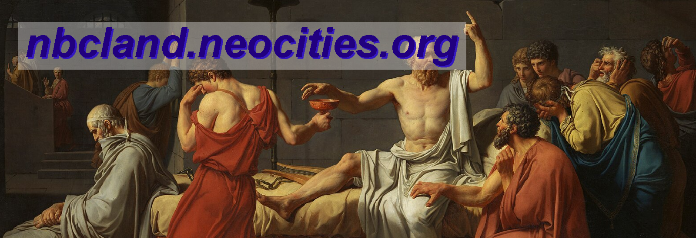
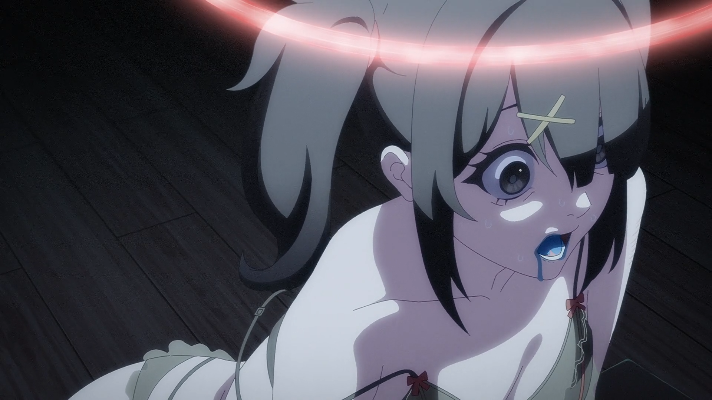
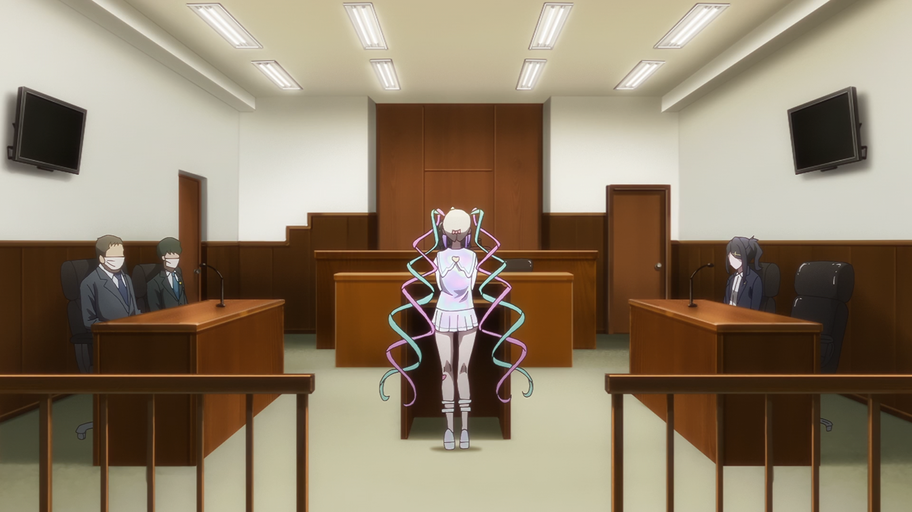
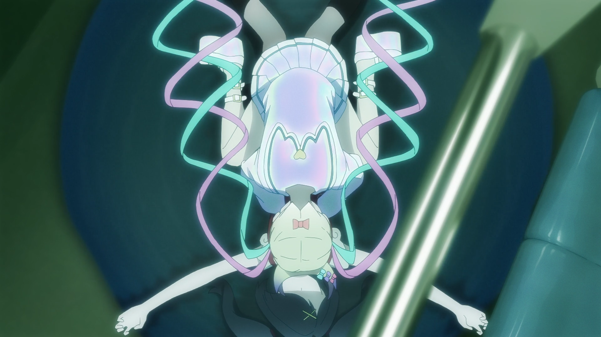
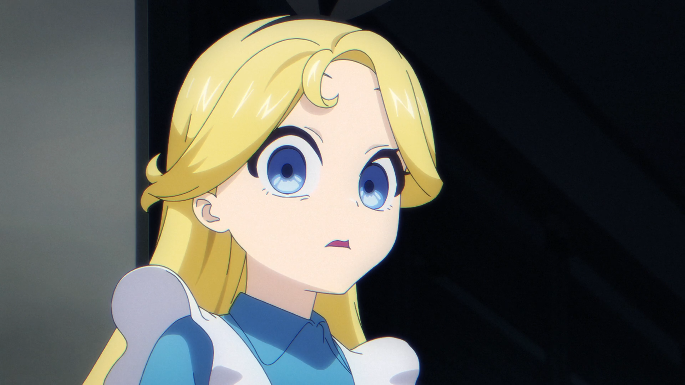
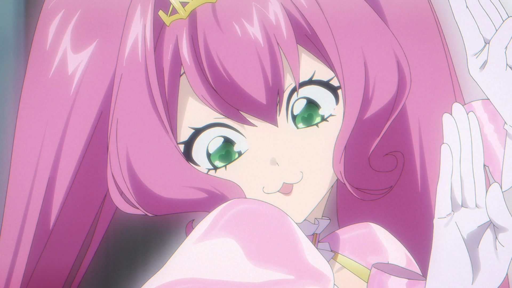
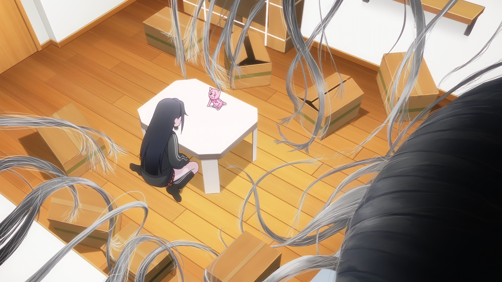

blog
latest entry
16/06/2026
NEEDY GIRL OVERDOSE - Episode 11: Canon a 3 Violinis con Basso c. / Gigue
Weirdest episode yet.

Evangelion references aside (Unit 01 wings during a literal mind rape sequence), this was probably one of the more disturbing pieces of television that I've ever watched. A lot of this episode takes place inside Ame's mind, with her dealing with the fallout of losing to her rival idol group, Karamazov.
This episode mirrors another characters mental breakdown, Michica's, back in Episode 8. Both characters exhibit large, upper-class egos, Michica with her obsessiveness with beauty and Ame with her desire to save everybody. The only difference between these two is that Michica actually had friends to help pull her out.
Ame doesn't.
And in this episode, we see the results of that.

The court scene (with KAngel as the accused, Otaku's as the accuser, and Ame as KAngel's lawyer), reminds me of the Pink Floyd album The Wall, in which the main protagonist of the album, Pink (how innovative), after a bout of self-isolation puts himself "on trial" and realises the importance of human connection, and thus tears down his mental barriers (the wall). An attempt by KAngel is shown here, with the result being the opposite of what occurred in The Wall.

This entire sequence even ends with KAngel's symbolic murder of Ame, likely referencing her online persona (and all the baggage with it) finally winning over her own self.



The rest of the episode focuses on her childhood, much like Episode 3 did, namely her imaginary childhood friends. This also lays the groundwork for P-chan's eventual dominance in her life, as it shows Ame cycling through different imaginary friends until one fits perfectly. Something to note, the first 2 friends are purely in Ame's head, while P-chan (as discovered in Episode 10), is the cat plush from her childhood (a physical object).
The ending of this episode shows Ame's metamorphosis (after caterpillars burst from her eyes) into the coccoon from the beginning of the episode. This lines up with Kache and Lollipop's arrival, being the friends wanting to help Ame out, likely a symbol of Ame's transition from a disgusting caterpillar (as she puts it) to a butterfly, some sort of rebirth after being "killed" in Episode 10.
This series has always been highly metaphorical in nature, and unfortunately I lack the mental capacity to properly interpret a lot of what is going on in the show, so all of this might be wrong. Feel free to correct me, though.
older entries
X_X


2024-2026. Proudly made on Microsoft Windows™.
This website was built and tested with a Blink-based browser. Firefox users may have a slightly different user experience.
Not associated with NBC or ComCast. Any similarity or reference to corporations, living or dead is purely coincidental.
This site is built on and only meant to be viewed on a desktop.